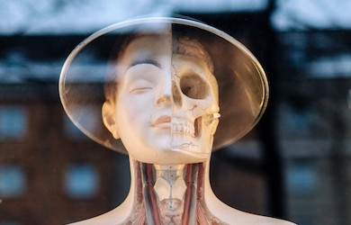

Visit us

Address
The museum is located at Oslotoppen 1, 0101 Oslo
Phone: +47 12345678
The museum has wheelchair accessibility ramps. It also has audio guides and braille display signs for the visually impaired.
Opening Hours
Monday: Closed Tuesday: 10:00 – 16:00 Wednesday: 10:00 – 16:00 Thursday: 10:00 – 16:00 Friday: 10:00 – 19:00 Saturday: 9:00 – 16:00 Sunday: 9:00 – 13:00

Eat
There is a café attached to the museum where you can get light lunches, soft drinks, coffee, snacks and more.
Shop
Our shop offers a range of memorabilia from the museum as well as great gifts and activity packs that allow you to continue to explore science even after you’ve left the museum.